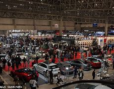
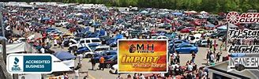
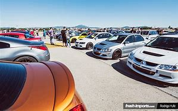

Los Mejores Eventos JDM
Los fanáticos de los carros JDM se reúnen en varios eventos a lo largo del año para compartir su amor por los autos. Algunos de los eventos más populares incluyen:
- Tokyo Auto Salon: Una de las exposiciones más importantes del mundo, donde se muestran autos JDM modificados. 
- Import Face-Off: Un evento en los EE.UU. donde se celebran competiciones de carros modificados. 
- Mecca of JDM: Evento anual en Japón que atrae a miles de entusiastas del tuning. 